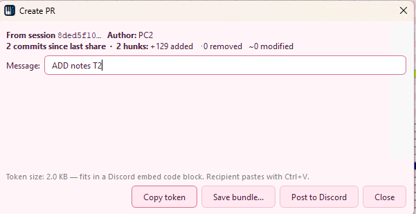
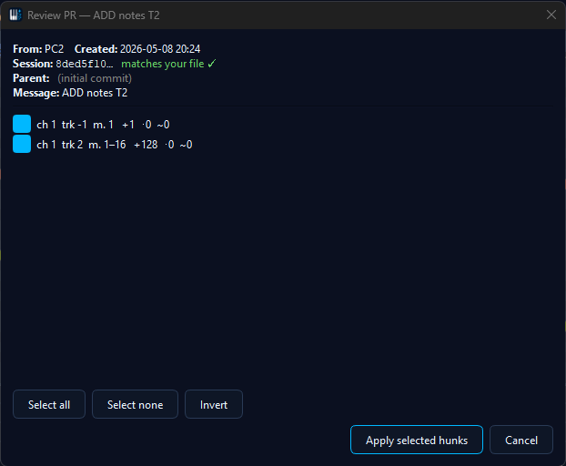
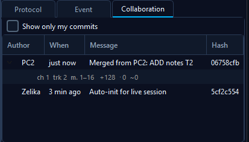

📝 Async PR & Smart-Paste Tokens
Bundle a change-set into a single token, send it through any channel (Discord, email, file
drop), and the recipient hits Ctrl+V in MidiEditor to review each hunk before merging.
This is the simplest collab mode - no servers, no realtime, just text.

When to use it
PRs shine when realtime co-editing would be the wrong tool: an AI agent just generated a draft you want to look over before merging; a friend sent a few-bar suggestion you want to cherry-pick from; you're working across timezones and don't want to wait for the other side to be online. A PR is a snapshot of your changes since the last share - the recipient sees a per-hunk diff and chooses what to merge.
Compared to a Live Session, a PR is asynchronous, leaves no servers running, and gives the receiver explicit veto power on every change. For small back-and-forth changes between two people on the same network, a Live Session is faster; for larger reviewable change-sets, the PR flow is better.
Quick start
- Make some edits in your MIDI file, save it (so the changes are captured in the local commit history).
- Open Collab → Create PR…. Pick a short title and an optional longer message describing what's in the change.
- Click Copy inline token. The clipboard now holds a single string that fully encodes your change-set.
- Paste the token into Discord, email, a chat, a text file - anywhere it'll reach the recipient.
- The recipient opens MidiEditor with their copy of the file, hits
Ctrl+Vin the matrix view, and the Review dialog opens.
Creating a PR
Open Collab → Create PR… after you've made and saved some edits. The dialog shows what'll be included in the bundle and gives you two share modes:
- Inline token - the entire bundle is base64-encoded into
the token text itself (
mep://<sessionId>:inline:…). Self-contained, no follow-up download. Works for change-sets up to roughly 30 KB compressed; larger PRs nudge you toward the link form. - Link token - for very large bundles. Saves the bundle
file to disk and produces a token that points at the URL where you've
hosted it (
mep://<sessionId>:link:<url>). Useful when you're sharing through a hosting platform that strips long messages.
The PR's scope is automatically "everything since your last share" - the local commit history (sidecar file) is the source of truth. If you've shared 3 PRs already, the 4th covers only the changes since the 3rd.
When the inline token gets long, the dialog still lets you copy it in one click. If your audience is Discord, the bundled Webhook integration can post the same token to a channel automatically.
Receiving a PR

Copy a smart-paste token from anywhere - chat, mail, file. In
MidiEditor, with your copy of the file open, press
Ctrl+V while the matrix view has focus. The Review
dialog opens automatically.
The dialog lists every change as a hunk - events added, removed, or modified, grouped by track and channel. Each hunk has a checkbox; uncheck to skip. When you click Apply, only the selected hunks merge into your file as a single undo step. Anything you skipped stays in the bundle for next time (you can always paste the same token again to revisit them).
If the token's session ID doesn't match the file you have open, MidiEditor warns you with a "PR is from a different session" dialog - useful catch for "I pasted into the wrong file" cases.
Token formats
Both forms start with the unique mep:// scheme so
Ctrl+V can route them to the Review dialog instead of
falling through to a normal paste:
mep://<sessionId>:inline:<base64-zlib>- the bundle is encoded directly into the token. Roughly 1.4× the bundle's compressed size in characters.mep://<sessionId>:link:<url>- the token holds only a URL pointing at the bundle file. The file itself must be reachable when the recipient pastes - otherwise the Review dialog reports a download error and the token is harmless to discard.
The recipient never has to know which form was used - the Review dialog handles both transparently.
History tab

The Collab History tab (right side panel, next to Tracks / Channels / Protocol / Event) shows every commit on the current file's local history. Each row is one save: timestamp, author, hunk counts. Expanding a row reveals the per-hunk summary - useful for verifying a PR's contents before sharing it, or for understanding how the file got into its current state after a few merges.
The history lives in a small .midiedit-collab.json
sidecar file next to the .mid. Sharing the sidecar is
optional - in a Live Session it gets shipped automatically;
in async PRs the bundle carries only the slice you chose.
Troubleshooting
- "Token doesn't start with
mep://" - the token had surrounding whitespace, line breaks, or markdown backticks (e.g. when pasted from a Discord code block). MidiEditor auto-trims those before checking, so pasting```mep://...```works as well as the bare token. If you still see this, the source copy lost characters - ask the sender to re-share. - "PR is from a different session" - the file you have open isn't the same logical file the PR was created from. Open the right file (or accept that you're cross-merging with the warning's context).
- "Could not decode the smart-paste token" - truncated payload (the token got cut off in transit, e.g. by a 2000-char chat limit). Ask the sender to use the link-token form instead.
- "Cherry-pick failed" - one of the hunks couldn't find its target event in the current file (likely the file already moved past the PR's parent commit through other edits). The bundle stays valid; try again after pulling other changes, or only check the hunks that still apply.